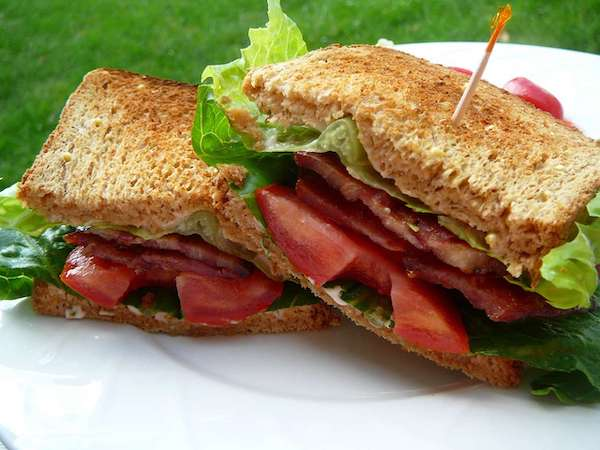

B.L.T (Bacon, Lettuce, Tomato)

Description
A simple yet popular sandwich. As the name suggests, it is made up of three primary ingredients. Bacon, lettuce, and tomato.
Ingredients
- 2 slices of sandwich bread
- 1/2 tomato
- 2 slices of lettuce
- 4 strips of bacon
- Pinch of salt and pepper
- Sauce of choice
Steps
- Toast sandwich bread.
- Once toasted, smear sauce on both slices of sandwich bread.
- Slice tomatoes and place on bread.
- Season tomatoes with salt and pepper.
- Cook strips of bacon however you prefer. Once cooked, drain them of excess grease and then place on top of tomatoes.
- Place lettuce on top of bacon.
- Place the other sandiwch bread slice on top of the lettuce.
- Slice in half. Enjoy!